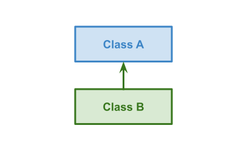
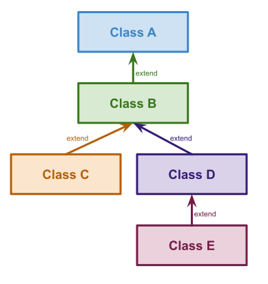
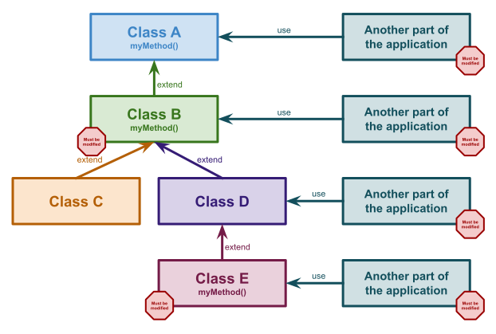

In OOP, the simplest way to change the behavior of a class A is to create a class B that extends class A. Extensions allow you to override any public and protected methods of the parent class. That‘s quite simple, right?

Furthermore, you can extend a class multiple times with several levels of inheritance. In the following example, we can see that class B has two children, and the class hierarchy has four levels of inheritance. Now let’s explore why it is not a good idea and which problem can occur?

Designing code like this won’t facilitate refactoring. Let’s consider a scenario where Class A has a method that is overridden in both Class B and Class E. What happens if we decide to change the signature of this method in Class A? We will need to rewrite this method in Class B and Class E to match the new signature. Another frustrating aspect is that we will have to modify all portions of the code that use this method. In a small codebase, this may be manageable, but in a large one, it’s a different story!

This code won’t ease team collaboration. Let’s consider another scenario: where we are working on a huge monolith shared with several other teams. What happens if team A needs to change class A? That means teams B, C, and D must also update their codebases. We have introduced coupling between these three teams because of the coupling between classes A, B, C, and D. That’s a shame. This design will slow down your delivery because team A will need to coordinate with three other teams if it needs to change class A.

I have worked on several codebases that heavily relied on inheritance, but now I barely use it due to the drawbacks I’ve described. Instead, I prefer to use composition. It is better to work with several small classes and assemble them, it’s like playing with Lego blocks. Moreover, it greatly simplifies testing.
I try to apply the open-closed principle as much as possible to enhance code modularity and facilitate evolution. In a related blog post, I explain the principle and provide an example to illustrate how to refactor code that doesn’t follow this principle. Here is the link: